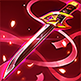
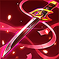
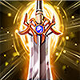
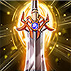

"Ta từng là hy vọng duy nhất của nhân loại trong cả thế kỷ chiến tranh với ma cà rồng"
Trước khi trở thành Thợ săn ác quỷ, cả dòng họ của Valhein đều chỉ là cống phẩm đối với bè lũ Huyết tộc. Họ chỉ đơn giản là lũ dê béo được nuôi dưỡng hàng ngày chờ đến khi Huyết tộc cần cung cấp lương thực mà thôi. Là thành viên ưu tú nhất của cả dòng họ, Valhein quyết không thể tiếp tục số phận đen tối này, anh đã cùng khẩu súng huyền thoại của mình phá nát gông cùm xiềng xích của bầy Huyết tộc một lần và mãi mãi.
Sự phản kháng của Valhein nhanh chóng lan truyền như một ngọn lửa hừng hực cháy. Càng ngày càng có nhiều thành viên gia nhập hơn, và cũng từ đây Valhein đã kết bạn với người đồng hành thân cận nhất của mình, Violet. Tuy nhiên kể cả có lớn mạnh bao nhiêu đi chăng nữa, dường như sự chống cự của một bộ phận nhân loại vẫn quá nhỏ trước ách thống trị vững chắc hàng thế kỷ của Huyết tộc.
Trước sự phản công cuồng bạo của Huyết tộc, Valhein quyết dẫn dắt tất cả lực lượng phản kháng tìm đến Lâu đài khởi nguyên hòng tìm được sự che chở. Nhằm bảo đảm tốp đầu được đến nơi an toàn, Valhein đã cùng Violet và các chiến sĩ tài năng nhất ở lại để chặn hậu. Dẫu chiến thắng và mang được những đồng đội còn sống sót đến với an toàn, nhưng cái giá phải trả vẫn quá cao, Valhein thề sẽ có ngày anh khiến bè lũ Huyết tộc trả giá cho những tội ác của chúng.
"Nhân danh trời đất, ta thề sẽ quét sạch mọi thế lực bóng tối và bè lũ Huyết tộc khỏi thế giới này!"


 

 



Ám khí
Chuyến săn mạo hiểm
Hồi chiêu: 9/8.6/8.2/7.8/7.4/7 giây Năng lượng sử dụng: 65/70/75/80/85/90 năng lượng Valhein ném một phi tiêu đặc biệt vào kẻ thù trong phạm vi, gây 300/330/360/390/420/450 (+0.8 Công vật lý) (+0.8 Công phép) sát thương phép, đồng thời giúp tăng một điểm hiệu ứng "Thợ săn".
-
Trừ tà
Hồi chiêu: 10/9.4/8.8/8.2/7.6/7 giây Năng lượng sử dụng: 70/80/90/100/110/120 năng lượng Valhein ném một phi tiêu hoàng kim vào mục tiêu, gây 150/170/190/210/230/250 (+0.58 Công vật lý)(+0.6 Công phép) sát thương phép, và làm choáng mục tiêu, đồng thời giúp tăng một điểm hiệu ứng "Thợ săn".

-
Bão đạn
Hồi chiêu: 24/20/16 giây Năng lượng sử dụng: 100/125/150 năng lượng Valhein bắn sáu viên đạn bạc gây 200/250/300 (+1.0 Công vật lý)(+1.0 Công phép) sát thương phép lên kẻ địch. Mỗi phát đạn trúng đích giúp tăng 10% tốc chạy (tối đa 60%), và 8% tốc đánh (tối đa 48%), kéo dài 3 giây. Nếu như kẻ địch trúng nhiều hơn một viên đạn, kẻ đó chỉ phải chịu 40% sát thương từ viên thứ hai